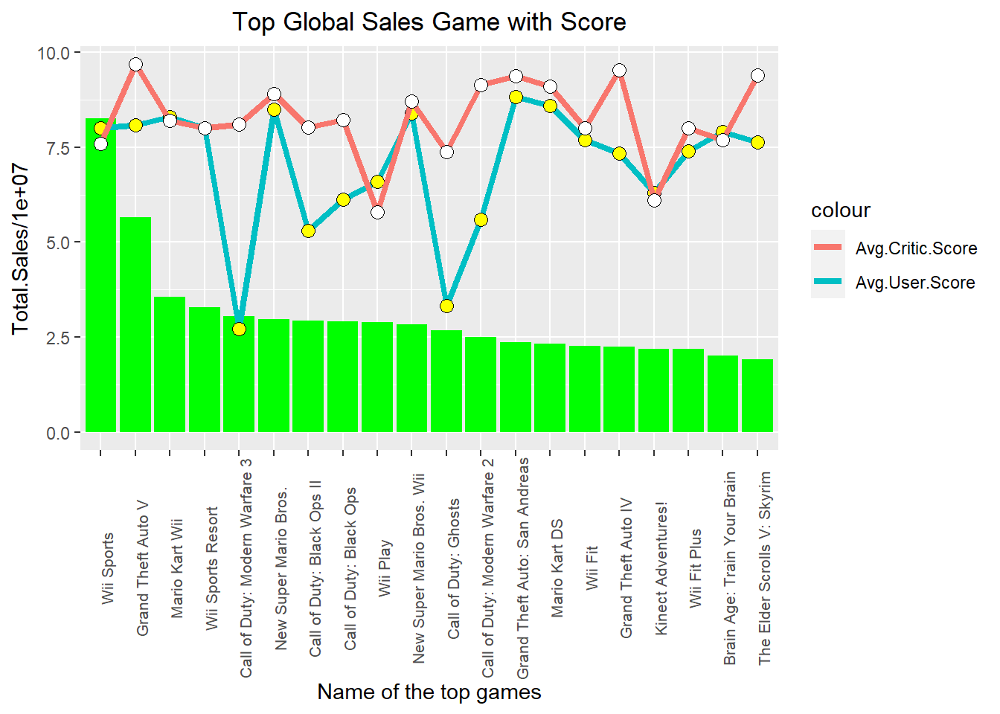

Chapter 9 The game sales dataset
This is a video game sales data including game sales of North America, European, Japan, and other area, together they make the global sale. The data also gives information about the critic score, user score, and the counts of critics or users who gave these two kind of scores. This data was downloaded from https://www.kaggle.com/rush4ratio/video-game-sales-with-ratings#Video_Games_Sales_as_at_22_Dec_2016.csv.
The detail about the data is listed as follow:
Name: Name of the game
Platform: Console on which the game is running
Year_of_Release: Year of the game released
Genre: Game’s category
Publisher: Publisher
NA_Sales: Game sales in North America (in millions of units)
EU_Sales: Game sales in the European Union (in millions of units)
JP_Sales: Game sales in Japan (in millions of units)
Other_Sales: Game sales in the rest of the world, i.e. Africa, Asia excluding Japan, Australia, Europe excluding the E.U. and South America (in millions of units)
Global_Sales: Total sales in the world (in millions of units)
Critic_Score: Aggregate score compiled by Meta critic staff
Critic_Count: The number of critics used in coming up with the Critic_score
User_Score: Score by Metacritic’s subscribers
User_Count: Number of users who gave the user_score
Developer: Party responsible for creating the game
Rating: The ESRB ratings: E for “Everyone”; E10+ for “Everyone 10+”; T for “Teen”; M for “Mature”; AO for “Adults Only”; RP for “Rating Pending”; K-A for kids to adults.
After downloading the data, We replaced N/A with NA first in Excel and saved it as csv file , then read in. We removed these observations with empty strings of Rating and 6825 observations were left in our data set “game.” We noticed that there were lots of sales value with zero. To prepare these variables ready for being taken log value to make them normal or close to the normal distribution, we transformed the sales into basic units and plus 1. We also divided critic score by 10 to match the scale unit of user score.
9.1 Reading in data and manage data
tem <- read.csv("datasets/video-game-sales-at-22-Dec-2016.csv")
tem <- na.omit(tem) # Remove NA
library(dplyr)
game <- tem %>% filter(Rating != "") %>% droplevels() #remove empty rating observations
# By multiplying 1000000 we get the actual sale,
# Adding 1 makes all sales positive which make log possible for all sales later
game$Year_of_Release <- as.factor(as.character(game$Year_of_Release))
game$NA_Sales <- game$NA_Sales * 1000000 + 1
game$EU_Sales <- game$EU_Sales * 1000000 + 1
game$JP_Sales <- game$JP_Sales * 1000000 + 1
game$Other_Sales <- game$Other_Sales * 1000000 + 1
game$Global_Sales <- game$Global_Sales * 1000000 + 1
# By being divided by 10 to make Critic Score the same decimal as User Score
game$Critic_Score <- as.numeric(as.character(game$Critic_Score)) / 10
game$User_Score <- as.numeric(as.character(game$User_Score))
game$Critic_Count <- as.numeric(game$Critic_Count)
game$User_Count <- as.numeric(game$User_Count)
# Set category variables as factor variables
game$Name <- as.factor(game$Name)
game$Platform <- as.factor(game$Platform)
game$Genre <- as.factor(game$Genre)
game$Publisher <- as.factor(game$Publisher)
game$Developer <- as.factor(game$Developer)
game$Rating <- as.factor(game$Rating)
# Format column names
colnames(game) <- c("Name", "Platform", "Year.Release", "Genre", "Publisher", "NA.Sales", "EU.Sales", "JP.Sales", "Other.Sales", "Global.Sales", "Critic.Score", "Critic.Count", "User.Score", "User.Count", "Developer", "Rating")
str(game)## 'data.frame': 6825 obs. of 16 variables:
## $ Name : Factor w/ 4377 levels " Tales of Xillia 2",..: 4203 2055 4205 2530 4201 2533 2054 4195 1820 4196 ...
## $ Platform : Factor w/ 17 levels "3DS","DC","DS",..: 13 13 13 3 13 13 3 13 15 13 ...
## $ Year.Release: Factor w/ 25 levels "1985","1988",..: 15 17 18 15 15 18 14 16 19 18 ...
## $ Genre : Factor w/ 12 levels "Action","Adventure",..: 11 7 11 5 4 5 7 11 4 11 ...
## $ Publisher : Factor w/ 262 levels "10TACLE Studios",..: 164 164 164 164 164 164 164 164 147 164 ...
## $ NA.Sales : num 41360001 15680001 15610001 11280001 13960001 ...
## $ EU.Sales : num 28960001 12760001 10930001 9140001 9180001 ...
## $ JP.Sales : num 3770001 3790001 3280001 6500001 2930001 ...
## $ Other.Sales : num 8450001 3290001 2950001 2880001 2840001 ...
## $ Global.Sales: num 82530001 35520001 32770001 29800001 28920001 ...
## $ Critic.Score: num 7.6 8.2 8 8.9 5.8 8.7 9.1 8 6.1 8 ...
## $ Critic.Count: num 51 73 73 65 41 80 64 63 45 33 ...
## $ User.Score : num 8 8.3 8 8.5 6.6 8.4 8.6 7.7 6.3 7.4 ...
## $ User.Count : num 322 709 192 431 129 594 464 146 106 52 ...
## $ Developer : Factor w/ 1289 levels "10tacle Studios, Fusionsphere Systems",..: 779 779 779 779 779 779 779 779 468 779 ...
## $ Rating : Factor w/ 7 levels "AO","E","E10+",..: 2 2 2 2 2 2 2 2 2 2 ...
## - attr(*, "na.action")= 'omit' Named int [1:9826] 2 5 6 10 11 13 19 21 22 23 ...
## ..- attr(*, "names")= chr [1:9826] "2" "5" "6" "10" ...summary(game)## Name Platform Year.Release
## LEGO Star Wars II: The Original Trilogy : 8 PS2 :1140 2008 : 592
## Madden NFL 07 : 8 X360 : 858 2007 : 590
## Need for Speed: Most Wanted : 8 PS3 : 769 2005 : 562
## Harry Potter and the Order of the Phoenix: 7 PC : 651 2009 : 550
## Madden NFL 08 : 7 XB : 565 2006 : 528
## Need for Speed Carbon : 7 Wii : 479 2003 : 498
## (Other) :6780 (Other):2363 (Other):3505
## Genre Publisher NA.Sales
## Action :1630 Electronic Arts : 944 Min. : 1
## Sports : 943 Ubisoft : 496 1st Qu.: 60001
## Shooter : 864 Activision : 492 Median : 150001
## Role-Playing: 712 Sony Computer Entertainment: 316 Mean : 394485
## Racing : 581 THQ : 307 3rd Qu.: 390001
## Platform : 403 Nintendo : 291 Max. :41360001
## (Other) :1692 (Other) :3979
## EU.Sales JP.Sales Other.Sales Global.Sales
## Min. : 1 Min. : 1 Min. : 1 Min. : 10001
## 1st Qu.: 20001 1st Qu.: 1 1st Qu.: 10001 1st Qu.: 110001
## Median : 60001 Median : 1 Median : 20001 Median : 290001
## Mean : 236090 Mean : 64159 Mean : 82678 Mean : 777591
## 3rd Qu.: 210001 3rd Qu.: 10001 3rd Qu.: 70001 3rd Qu.: 750001
## Max. :28960001 Max. :6500001 Max. :10570001 Max. :82530001
##
## Critic.Score Critic.Count User.Score User.Count
## Min. :1.300 Min. : 3.00 Min. :0.500 Min. : 4.0
## 1st Qu.:6.200 1st Qu.: 14.00 1st Qu.:6.500 1st Qu.: 11.0
## Median :7.200 Median : 25.00 Median :7.500 Median : 27.0
## Mean :7.027 Mean : 28.93 Mean :7.186 Mean : 174.7
## 3rd Qu.:8.000 3rd Qu.: 39.00 3rd Qu.:8.200 3rd Qu.: 89.0
## Max. :9.800 Max. :113.00 Max. :9.600 Max. :10665.0
##
## Developer Rating
## EA Canada : 149 AO : 1
## EA Sports : 142 E :2082
## Capcom : 126 E10+: 930
## Ubisoft : 103 K-A : 1
## Konami : 95 M :1433
## Ubisoft Montreal: 87 RP : 1
## (Other) :6123 T :2377Summary of these variables tells us that some of the games were published in the same name; PS2 is the most popular platform; Action is the most popular Genre; Electronic Arts has the most high frequency among the publishers; Rating T and E are the two most released ratings; For these sales, though the minimums, several quantiles, and medians are small, the maximums are high, which means there are real good sale games among them; Extreme big maximum User count hints so many users scored some special games.
Our pre-analysis shows that these variables are not normally distributed, especially those sales and score counts variables. We take logs to transform these variables.
NA.Sales.Log <- log(game$NA.Sales)
EU.Sales.Log <- log(game$EU.Sales)
JP.Sales.Log <- log(game$JP.Sales)
Other.Sales.Log <- log(game$Other.Sales)
Global.Sales.Log <- log(game$Global.Sales)
Critic.Count.Log <- log(game$Critic.Count)
User.Count.Log <- log(game$User.Count)Then we combine the log variables with the original variables.
game.log <- cbind.data.frame(NA.Sales.Log, EU.Sales.Log, JP.Sales.Log, Other.Sales.Log,
Global.Sales.Log, Critic.Count.Log, User.Count.Log)
game <- cbind.data.frame(game, game.log) # The data we use for analysisNow we plot histogram and QQ plot for the transformed data set.
name <- colnames(game)[c(11, 13, 17:23)] # Pick up the numeric columns according to the names
par(mfrow = c(5, 4)) # Layout in 5 rows and 4 columns
for (i in 1:length(name)){
sub <- sample(game[name[i]][, 1], 5000)
submean <- mean(sub)
hist(sub, main = paste("Hist. of", name[i], sep = " "), xlab = name[i])
abline(v = submean, col = "blue", lwd = 1)
qqnorm(sub, main = paste("Q-Q Plot of", name[i], sep = " "))
qqline(sub)
if (i == 1) {s.t <- shapiro.test(sub)
} else {s.t <- rbind(s.t, shapiro.test(sub))
}
}
s.t <- s.t[, 1:2] # Take first two columns of shapiro.test result
s.t <- cbind(name, s.t) # Add variable name for the result
s.t## name statistic p.value
## s.t "Critic.Score" 0.962095 2.752307e-34
## "User.Score" 0.9120088 4.411444e-47
## "NA.Sales.Log" 0.6441563 5.738764e-73
## "EU.Sales.Log" 0.7115408 1.045862e-68
## "JP.Sales.Log" 0.6267102 5.87549e-74
## "Other.Sales.Log" 0.7100878 8.299196e-69
## "Global.Sales.Log" 0.9970401 2.345161e-08
## "Critic.Count.Log" 0.9796708 3.544379e-26
## "User.Count.Log" 0.9423045 2.092411e-40 Histograms and qq plots of these original sales show abnormal distributed, but the log values of these sales are much close to normal distribution, especially the log value of global sales. Though the Shapiro test with a p-value less than 0.05 denies its normality, it’s much better than the other sales or other log values of sales. Maybe the missing value of sale is the reason of the abnormality. We will pay more attention to the log value of global sales later.
Histograms and qq plots of these original sales show abnormal distributed, but the log values of these sales are much close to normal distribution, especially the log value of global sales. Though the Shapiro test with a p-value less than 0.05 denies its normality, it’s much better than the other sales or other log values of sales. Maybe the missing value of sale is the reason of the abnormality. We will pay more attention to the log value of global sales later.
From the histograms and qq plots we also see that two scores and log values of their counts are close to normal distribution. Though the Shapiro tesst still deny the normality of these log values. We assume they are normally distributed in our analysis.
There are lots of interest points in this data set such as the distribution of global and regional sales, their relationship; the correlation of critic score and user score, and their counts; whether these scores are the main effect for sales, or the effect of other factors matter to sales such as genre, rating, platform, publisher, and so on.
First, let’s do visualization.
9.2 Visualization of categorical variables
To simplify platform analysis, We regroup platform as Platform.type.
# Regroup platform as Platform.type
pc <- c("PC")
xbox <- c("X360", "XB", "XOne")
nintendo <- c("Wii", "WiiU", "N64", "GC", "NES", "3DS", "DS")
playstation <- c("PS", "PS2", "PS3", "PS4", "PSP", "PSV")
game <- game %>%
mutate(Platform.type = ifelse(Platform %in% pc, "PC",
ifelse(Platform %in% xbox, "Xbox",
ifelse(Platform %in% nintendo, "Nintendo",
ifelse(Platform %in% playstation, "Playstation", "Others"))))) library(ggplot2)
ggplot(game, aes(x = Platform.type)) + geom_bar(fill = "blue")
Figure 9.1: Bar plot of platform type.
As the bar plot shows here, Playstation is the biggest group, then Xbox and Nintendo. While “Others” is the smallest type.
dat <- data.frame(table(game$Genre))
dat$fraction <- dat$Freq / sum(dat$Freq)
dat <- dat[order(dat$fraction), ]
dat$ymax <- cumsum(dat$fraction)
dat$ymin <- c(0, head(dat$ymax, n = -1))
names(dat)[1] <- "Genre"
library(ggplot2)
ggplot(dat, aes(fill = Genre, ymax = ymax, ymin = ymin, xmax = 4, xmin = 3)) +
geom_rect(colour = "grey30") + # Background color
coord_polar(theta = "y") + # Coordinate system to polar
xlim(c(0, 4)) +
labs(title = "Ring plot for Genre", fill = "Genre") +
theme(plot.title = element_text(hjust = 0.5))
Action, Sports, and Shooter are the first three biggest genres. Action occupies almost 25% of genre. Three of them together contribute over half of the genre count. Puzzle, Adventure, and Stratege have relatively less count.
Now we regroup rating AO, RP and K-A as “Others” because there are only few observations of these ratings.
# Regroup Rating as Rating.type
rating <- c("E", "T", "M", "E10+")
game <- game %>%
mutate(Rating.type = ifelse(Rating %in% rating, as.character(Rating), "Others")) counts <- sort(table(game$Rating.type), decreasing = TRUE)
# Rename the names of counts for detail information
names(counts) <- c("T - Teen", "E - Everyone", "M - Mature", "E10+ - Everyone 10+", "Others")
pct <- paste(round(counts/sum(counts) * 100), "%", sep = " ")
lbls <- paste(names(counts), "\n", pct, sep = " ") # Rating information and percentage
pie(counts, labels = lbls, col = rainbow(length(lbls)),
main="Pie Chart of Ratings with sample sizes")
The popular ratings are T, E, M, and E10+, according to the order. “Others” only occupies a very little portion in the all games.
library(ggmosaic)
library(plotly)
p <- ggplot(game) +
geom_mosaic(aes(x = product(Rating.type), fill = Platform.type), na.rm = TRUE) +
labs(x = "Rating Type", y = "Platform Type", title="Mosaic Plot") +
theme(axis.text.y = element_blank())
ggplotly(p)Figure 9.2: Mosaic plot between platform type and rating type.
Same as we noticed previously, the Rating Type of “Others” cannot be seen here in the plot because of its small amount. For all platform and rating combinations, Playstation games occupy the biggest portion in all other three different rating types except Everyone 10 plus. Nintendo is the most popular game for Everyone 10 plus, it’s the second popular platform for rating Everyone. Xbox is the second popular platform for rating Mature and Teenage, and it’s the third favorite platform for rating Everyone and Everyone 10 plus. Most “Others” platform games are rated as Everyone.
Exercise 9.1
Download the game sale data set and clean the data as similar as described in the beginning of this chapter, produce a masaic plot between genre and rating. Interpret your plot breifly.
9.3 Correlation among numeric variables
st <- game[, c(11, 13, 17:23)] # Take numeric variables as goal matrix
st <- na.omit(st)
library(ellipse)
library(corrplot)
corMatrix <- cor(as.matrix(st)) # Correlation matrix
col <- colorRampPalette(c("#7F0000", "red", "#FF7F00", "yellow", "#7FFF7F",
"cyan", "#007FFF", "blue", "#00007F"))
corrplot.mixed(corMatrix, order = "AOE", lower = "number", lower.col = "black",
number.cex = .8, upper = "ellipse", upper.col = col(10),
diag = "u", tl.pos = "lt", tl.col = "black")
Figure 9.3: Corrplot among numeric variables.
There are high r values of 0.75, 0.65, 0.52, and 0.42 between the log values of Global.Sales and regional sales, we will consider using Global.Sales.Log as our target sales to analyze the relationship of sales with other variables later. On the other hand, there are good positively correlations between regional sales too. User Score is positive correlated to Critic Score with r of 0.58. There is little correlation between User Count log value and User Score.
plot(hclust(as.dist(1 - cor(as.matrix(st))))) # Hierarchical clustering
Figure 9.4: Exercise dendrogram for numeric variables.
All sales’ log values except JP.Sales.Log build one cluster; Scores, log values of counts, and JP.Sales build the second cluster. In the first cluster, Other.Sales.Log is closest to Global.Sales.Log, then NA.Sales.Log, and EU.Sales.Log is the next.
9.4 Analysis of score and count
library(ggpmisc) # Package for function stat_poly_eq
formula <- y ~ x
p1 <- ggplot(game, aes(x = User.Score, y = Critic.Score)) +
geom_point(aes(color = Platform), alpha = .8) +
geom_smooth(method = 'lm', se = FALSE, formula = formula) + # Add regression line
theme(legend.position = "none") +
stat_poly_eq(formula = formula, # Add regression equation and R square value
eq.with.lhs = "italic(hat(y))~`=`~", # Add ^ on y
aes(label = paste(..eq.label.., ..rr.label.., sep = "*plain(\",\")~")),
label.x.npc = "left", label.y.npc = 0.9, # Position of the equation label
parse = TRUE) # Output.type as "expression"
p2 <- ggplot() +
geom_density(data = game, aes(x = Critic.Score), color = "darkblue", fill = "lightblue") +
geom_density(data = game, aes(x = User.Score), color = "darkgreen", fill = "lightgreen", alpha=.5) +
labs(x = "Critic.Score-blue, User.Score-green")
library(gridExtra)
grid.arrange(p1, p2, nrow = 1, ncol = 2)
Figure 9.5: Scatter and density plot for critic score and user score.
There is positive correlation between Critic.Score and User.Score. In total, Critic score is lower than user score.
t.test(game$Critic.Score, game$User.Score)##
## Welch Two Sample t-test
##
## data: game$Critic.Score and game$User.Score
## t = -6.5463, df = 13629, p-value = 6.108e-11
## alternative hypothesis: true difference in means is not equal to 0
## 95 percent confidence interval:
## -0.2058518 -0.1109834
## sample estimates:
## mean of x mean of y
## 7.027209 7.185626T-test with a p-value of much less than 0.05 let us accept the alternative hypothesis with 95% confidence that there is a significant difference between the means of critic score and user score. The mean critic score is 7.03, and mean user score is 7.19.
library(hexbin)
p1 <- ggplot(game, aes(x = Critic.Count.Log, y = Critic.Score)) +
stat_binhex() + # Bin 2d plane into hexagons
scale_fill_gradientn(colours = c("black", "red"),
name = "Frequency") # Adding a custom continuous color palette
p2 <- ggplot(game, aes(x = User.Count.Log, y = User.Score)) +
stat_binhex() +
scale_fill_gradientn(colours = c("black", "red"),
name = "Frequency") # Color legend
grid.arrange(p1, p2, nrow = 1, ncol = 2)Figure 9.6: Binhex plot for critic count and user count.
Critic.Score has a pretty good correlation with Critic.Count.Log with an r-value of 0.41 in the previous correlation analysis, though Critic.Count.Log doesn’t have an overall impact on Critic.Score. From the right figure we can see that User.Score looks independent on User.Count.Log.
Exercise 9.2
Use ggplot2 package to get a scatter plot with a smooth line between Global_Sales and NA_Sales. Use plain sentences to explain what you find in the plot.
Exercise 9.3
Use density plot of Global_Sales, NA_Sales, EU_Sales, JP_Sales and Other_Sales to illustrate the relationship among these sales. Interpret your plot.
9.5 Analysis of sales
9.5.1 By Year.Release
Year.Release <- game$Year.Release
counts <- data.frame(table(Year.Release))
p <- game %>%
select(Year.Release, Global.Sales) %>%
group_by(Year.Release) %>%
summarise(Total.Sales = sum(Global.Sales))
q <- cbind.data.frame(p, counts[2]) # Add counts to data frame
names(q)[3] <- "count"
q$count <- as.numeric(q$count)
ggplot(q, aes(x = Year.Release, y = Total.Sales, label = q$count)) +
geom_col(fill = "green") +
geom_point(y = q$count * 500000, size = 3, shape = 21, fill = "Yellow" ) +
geom_text(y = (q$count + 50) * 500000) + # Position of the text: count of games each year
theme(axis.text.x = element_text(angle = 90),
panel.background = element_rect(fill = "purple"),
panel.grid.major = element_blank(),
panel.grid.minor = element_blank()) +
scale_x_discrete("Year.Release", labels = as.character(Year.Release), breaks = Year.Release) Figure 9.7: Total global sales and game released by year.
We can see from the histogram of total sales that there were very few sales before 1996, only one game was released for each year. For several years between 1996 and 2000, the sales increased slowly. The count of games too. After that, there was a big rise in total sales and the number of released games. The top sales happened in 2008, and the most games were released in that year too. After that, both total sales and count of games went downhill.
9.5.2 By Region
library(reshape2)
game %>%
select(Year.Release, NA.Sales.Log, EU.Sales.Log, JP.Sales.Log,
Other.Sales.Log, Global.Sales.Log) %>%
melt(id.vars = "Year.Release") %>% # Stacks other columns into "Year.Release"
group_by(Year.Release, variable) %>%
summarise(total.sales = sum(value)) %>%
ggplot(aes(x = Year.Release, y = total.sales, color = variable, group = variable)) +
geom_point() +
geom_line() +
labs(x = "Year Release", y = "Total Sales Log Value", color = "Region") +
theme(axis.text.x = element_text(angle = 90),
panel.background = element_rect(fill="pink"),
panel.grid.major = element_blank(),
panel.grid.minor = element_blank())
Figure 9.8: Year wise log global sales by region.
The pattern of log value for these regional sales in those years are similar for Global, North America, Europe, and Others. Japan is much different from them, which matches the previous cluster analysis.
9.5.3 By Rating
game$Rating.type <- as.factor(game$Rating.type)
x <- game[, c(6:10)] # Different sales
matplot(t(x), type = "l", col = rainbow(5)[game$Rating.type])
legend("center", levels(game$Rating.type), fill = rainbow(5), cex = 0.8, pt.cex = 1)
text(c(1.2, 2, 3, 3.9, 4.8), 80000000, colnames(x))
Figure 9.9: Sales by rating type.
The figure shows one E game(for everyone) which was sold mainly in North America and Europe produced a sale tale of over 80 millions’ global sale, while North America contributed half of the global sales. We can check the game data and know it’s Wii Sports released in 2006. We also noticed that Mature games are popular in North America(green), which contributed a lot to global sales, Everyone games(red) have good sales in Europe, while Japanese like Teen(purple) and Everyone(red) games. The different ratings are balanced for the “other” region.
9.5.4 By Genre
game %>%
select(Year.Release, Global.Sales.Log, Genre) %>%
group_by(Year.Release, Genre) %>%
summarise(Total.Sales.Log = sum(Global.Sales.Log)) %>%
ggplot(aes(x = Year.Release, y = Total.Sales.Log, group = Genre, fill = Genre)) +
geom_area() +
theme(legend.position = "right", axis.text.x = element_text(angle = 90),
panel.background = element_rect(fill = "blue"),
panel.grid.major = element_blank(),
panel.grid.minor=element_blank()) 
Figure 9.10: Year wise log global sales by Genre.
The figure shows the golden year for games are from 2007 to 2009. The games produced above 7000 total.sales.log in each of those years. Action and sports games keep on the top sale for almost all of those 20 years, which contribute the biggest portion of the total global sales log. Adventure, Puzzle, and Strategy are on the bottom of the sale log list.
9.5.5 by Score
p1 <- ggplot(game, aes(x = Critic.Score, y = Global.Sales.Log)) +
geom_point(aes(color = Genre)) +
geom_smooth() # Regression line
p2 <- ggplot(game, aes(x = User.Score, y = Global.Sales.Log)) +
geom_point(aes(color = Rating)) +
geom_smooth()
grid.arrange(p1, p2, nrow = 1, ncol = 2)
Figure 9.11: Global sales by critic and user score.
Independent from Genre and Rating, Critic Score increases with Global.Sales.Log. Especially for Critic.Score bigger than 9, Global.Sales.Log straightly rises. Global.Sales.Log rises very slowly with User.Score.
game$Name <- gsub("Brain Age: Train Your Brain in Minutes a Day", # Shorten the game name
"Brain Age: Train Your Brain", game$Name)
p1 <- game %>%
select(Name, User.Score, Critic.Score, Global.Sales) %>%
group_by(Name) %>%
summarise(Total.Sales = sum(Global.Sales), Avg.User.Score = mean(User.Score),
Avg.Critic.Score = mean(Critic.Score)) %>%
arrange(desc(Total.Sales)) %>%
head(20)
ggplot(p1, aes(x = factor(Name, levels = Name))) +
geom_bar(aes(y = Total.Sales/10000000), stat = "identity", fill = "green") +
geom_line(aes(y = Avg.User.Score, group = 1, colour = "Avg.User.Score"), size = 1.5) +
geom_point( aes(y = Avg.User.Score), size = 3, shape = 21, fill = "Yellow" ) +
geom_line(aes(y = Avg.Critic.Score, group = 1, colour = "Avg.Critic.Score"), size = 1.5) +
geom_point(aes(y = Avg.Critic.Score), size = 3, shape = 21, fill = "white") +
theme(axis.text.x = element_text(angle = 90, size = 8)) +
labs(title = "Top Global Sales Game with Score", x = "Name of the top games" ) +
theme(plot.title = element_text(hjust = 0.5)) 
Among these 20 top sale games, the first two games, Wii Sports and Grand Theft Auto V have much better sales than the others. For most games, the average critic score is higher than the average user score, which agrees with our density plot in Figure 9.5. Two Call of Duty games got a much lower average user score comparing with other top sales games.
9.5.6 By Rating & Genre & Critic score
p1 <- game %>%
select(Rating.type, Global.Sales, Genre, Critic.Score) %>%
group_by(Rating.type, Genre) %>%
summarise(Total.Sales = sum(Global.Sales) / 10^8, Avg.Score = mean(Critic.Score))
p2 <- p1 %>%
group_by(Genre) %>%
summarise(Avg.Critic.Score = mean(Avg.Score))
ggplot() +
geom_bar(data = p1, aes(x = Genre, y = Total.Sales, fill = Rating.type),
stat = "Identity", position = "dodge") +
geom_line(data = p2,
aes(x = Genre, y = Avg.Critic.Score, group = 1, color = "Avg.Critic.Score"),
size = 2) +
geom_point(data = p2, aes(x = Genre, y = Avg.Critic.Score, shape = "Avg.Critic.Score"),
size = 3, color = "Blue") +
scale_colour_manual("Score", breaks = "Avg.Critic.Score", values = "yellow") +
scale_shape_manual("Score", values = 19) + # Add scale for line and point plot
theme(axis.text.x = element_text(angle = 90),
legend.position = "bottom",
panel.background = element_rect(fill = "black"),
panel.grid.major = element_blank(),
panel.grid.minor = element_blank()) 
Figure 9.12: Total sales for genre and rating with critic score.
Among genre & rating & Global.sale combinations, Everyone*sports game is so popular that it occupies the first in global sales among all combinations. Rating Mature contributes big portions in both Action and Shooter global sales. On average these three genres, Action, Shooter, and Sports with top total sales show relatively higher critic scores. Fighting, adventure, and racing games get relatively lower average critic scores. We can also see from the figure that adventure, puzzle, and strategy do sell less comparing with other genres.
9.5.7 By Platform
library(viridis)
library(scales)
p <- game %>%
group_by(Platform.type, Year.Release) %>%
summarise(total = sum(Global.Sales))
p$Year.Release. <- as.numeric(as.character(p$Year.Release))
ggplot(p, aes(x = Year.Release., fill = Platform.type)) +
geom_density(position = "fill") +
labs(y = "Market Share") +
scale_fill_viridis(discrete = TRUE) +
scale_y_continuous(labels = percent_format()) Figure 9.13: Yearly market share by platform type.
Nintendo and Xbox came after 1990. Before that PC and Playstation occupied the game market, PC was the main platform at that time. After 1995, the portion of PC and Playstation shrank, while Nintendo and Xbox grew fast and took over more portion than Playstation and PC in the market. Together with Nintendo and Xbox, other game platforms sprouted out in early 1990s, but they last for about 20 years and disappeared. From around 2010, the portions of Nintendo, PC, Playstation, and Xbox kept relatively evenly and stably.
# Compute 1-way ANOVA test for log value of global sales by Platform Type
model <- aov(Global.Sales.Log ~ Platform.type, data = game)
summary(model)## Df Sum Sq Mean Sq F value Pr(>F)
## Platform.type 4 1283 320.8 181.2 <2e-16 ***
## Residuals 6820 12077 1.8
## ---
## Signif. codes: 0 '***' 0.001 '**' 0.01 '*' 0.05 '.' 0.1 ' ' 1tukey <- TukeyHSD(model)
par(mar = c(4, 10, 2, 1))
plot(tukey, las = 1)
ANOVA test shows that at least one of the mean values of Global.Sales.Log for those platform types is significantly different from the others. In detail, the plot of Turkey tests tells us that there is a significant difference between all other pairs of platform types but between Xbox and Nintendo, others and Nintendo.
game$Platform.type <- as.factor(game$Platform.type)
ggplot(game, aes(x = Platform.type, y = Global.Sales.Log, fill = Rating.type)) +
geom_boxplot() 
Figure 9.14: Global sales log by platform and rating type.
In total, PC has lower Global sales log comparing with other platform types, while Playstation and Xbox have higher sale mediums for different rating types. Rating of Everyone sold pretty well in all platform types, while rating Mature sold better in PC, Playstation and Xbox.
ggplot(game, aes(Critic.Score, Global.Sales.Log, color = Platform.type)) +
geom_point() +
facet_wrap(~ Genre)
Figure 9.15: Global sales log by critic score for different platform type and genre.
Most genre plots in Figure 9.15 illustrate that there is positive correlation between Global.Sales.Log and Critic Score, the higher the critic score, the better the global sales log value. Most puzzle games were from Nintendo, while lots of stratege games are PC. For other genres, all platforms shared the portion relatively evenly. Lots of PC(green) shared lower market portion in different genres, while some of Nintendo(red) games in sports, racing, platform, and misc were sold very well. At the same time, Playstation with the genre of action, fighting, and racing games, Xbox with the genre of misc, action, and shooter games show higher global sales log too.
9.6 Effect of platform type to priciple components
st <- game[, c(11, 13, 17:23)]
pca <- prcomp(st, scale = T) # Scale = T to normalize the data
percentVar <- round(100 * summary(pca)$importance[2, 1:9], 0) # Compute % variancespcaData <- as.data.frame(pca$x[, 1:2]) # First and Second principal component value
pcaData <- cbind(pcaData, game$Platform.type) # Add platform type as third col. for cluster purpose
colnames(pcaData) <- c("PC1", "PC2", "Platform")
ggplot(pcaData, aes(PC1, PC2, color = Platform, shape = Platform)) +
geom_point(size = 0.8) +
xlab(paste0("PC1: ", percentVar[1], "% variance")) + # x label
ylab(paste0("PC2: ", percentVar[2], "% variance")) + # y label
theme(aspect.ratio = 1) # Width and height ratio
Figure 9.16: PCA plot colored with platform type.
PC, Xbox, Playstation and Nintendo occupy in their own positions in the PCA figure, which illustrates that they play different important role in components of the variance of PC1 and PC2.
library(ggfortify)
set.seed(1)
autoplot(kmeans(st, 3), data = st, label = FALSE, label.size = 0.1)
Figure 9.17: Kmeans PCA figure using ggfortify.
Together with PCA Figure 9.16, we will find that the first cluster is contributed mainly by Playstation, Xbox, Nintendo, and PC. The second cluster is contributed mainly by Xbox, Nintendo and Playstation. PC and Playstation build the third cluster.
9.7 Models for global sales
Because there are too many levels in Publisher and Developer, and there is an apparent correlation between them, we use only the top 12 levels of Publisher and classified the other publishers as “Others”; Because of the good correlation between Critic.Score and User.Score, we use only critic score; Also we use only log value of user score count because of its closer correlation to global sales log. We will not put other sales log variables in our model because of their apparent correlation with the global sales log.
# Re-categorize publisher into 13 groups
Publisher. <- head(names(sort(table(game$Publisher), decreasing = TRUE)), 12)
game <- game %>%
mutate(Publisher.type = ifelse(Publisher %in% Publisher., as.character(Publisher), "Others"))
game.lm <- game[, c(3:4, 11, 21, 23:26)] # Take columns for linear modelmodel <- lm(Global.Sales.Log ~ ., data = game.lm)
summary(model)##
## Call:
## lm(formula = Global.Sales.Log ~ ., data = game.lm)
##
## Residuals:
## Min 1Q Median 3Q Max
## -4.9221 -0.5558 0.0254 0.5789 4.1009
##
## Coefficients:
## Estimate Std. Error t value
## (Intercept) 10.187752 0.922104 11.048
## Year.Release1988 -3.088268 1.300919 -2.374
## Year.Release1992 -1.796072 1.300851 -1.381
## Year.Release1994 2.930510 1.302000 2.251
## Year.Release1996 1.488582 0.987461 1.507
## Year.Release1997 1.188658 0.955613 1.244
## Year.Release1998 0.744742 0.939532 0.793
## Year.Release1999 0.653088 0.936406 0.697
## Year.Release2000 0.785921 0.925467 0.849
## Year.Release2001 0.772488 0.922728 0.837
## Year.Release2002 0.570865 0.922008 0.619
## Year.Release2003 0.340110 0.921843 0.369
## Year.Release2004 0.550812 0.921901 0.597
## Year.Release2005 0.210534 0.921694 0.228
## Year.Release2006 0.141533 0.921703 0.154
## Year.Release2007 0.373361 0.921629 0.405
## Year.Release2008 0.529829 0.921677 0.575
## Year.Release2009 0.446508 0.921648 0.484
## Year.Release2010 0.596658 0.921889 0.647
## Year.Release2011 0.389514 0.921944 0.422
## Year.Release2012 -0.031458 0.922540 -0.034
## Year.Release2013 -0.170252 0.922985 -0.184
## Year.Release2014 -0.383671 0.923096 -0.416
## Year.Release2015 -0.478979 0.923302 -0.519
## Year.Release2016 -0.826950 0.923192 -0.896
## GenreAdventure -0.335989 0.063305 -5.307
## GenreFighting 0.072835 0.055338 1.316
## GenreMisc 0.357196 0.054323 6.575
## GenrePlatform -0.184139 0.054854 -3.357
## GenrePuzzle -0.345253 0.091582 -3.770
## GenreRacing -0.097943 0.048451 -2.021
## GenreRole-Playing -0.357837 0.043093 -8.304
## GenreShooter -0.142624 0.040372 -3.533
## GenreSimulation 0.405629 0.060887 6.662
## GenreSports 0.011217 0.046986 0.239
## GenreStrategy -0.483702 0.063838 -7.577
## Critic.Score 0.114744 0.009865 11.632
## User.Count.Log 0.615776 0.011589 53.134
## Platform.typeOthers -0.188799 0.066011 -2.860
## Platform.typePC -2.442802 0.051704 -47.246
## Platform.typePlaystation 0.135254 0.033868 3.994
## Platform.typeXbox -0.106733 0.036927 -2.890
## Rating.typeE10+ -0.058393 0.040759 -1.433
## Rating.typeM -0.467923 0.045704 -10.238
## Rating.typeOthers 0.144593 0.545092 0.265
## Rating.typeT -0.331696 0.035692 -9.293
## Publisher.typeAtari -0.506235 0.082442 -6.141
## Publisher.typeCapcom -0.759855 0.078983 -9.620
## Publisher.typeElectronic Arts -0.114754 0.053315 -2.152
## Publisher.typeKonami Digital Entertainment -0.705932 0.073042 -9.665
## Publisher.typeNamco Bandai Games -0.569621 0.074819 -7.613
## Publisher.typeNintendo 0.111592 0.074409 1.500
## Publisher.typeOthers -0.618870 0.046433 -13.328
## Publisher.typeSega -0.517708 0.069222 -7.479
## Publisher.typeSony Computer Entertainment -0.585506 0.069125 -8.470
## Publisher.typeTake-Two Interactive -0.276947 0.070848 -3.909
## Publisher.typeTHQ -0.117032 0.068824 -1.700
## Publisher.typeUbisoft -0.377192 0.059101 -6.382
## Pr(>|t|)
## (Intercept) < 2e-16 ***
## Year.Release1988 0.017628 *
## Year.Release1992 0.167420
## Year.Release1994 0.024432 *
## Year.Release1996 0.131733
## Year.Release1997 0.213591
## Year.Release1998 0.427996
## Year.Release1999 0.485550
## Year.Release2000 0.395791
## Year.Release2001 0.402522
## Year.Release2002 0.535836
## Year.Release2003 0.712180
## Year.Release2004 0.550211
## Year.Release2005 0.819326
## Year.Release2006 0.877964
## Year.Release2007 0.685409
## Year.Release2008 0.565410
## Year.Release2009 0.628070
## Year.Release2010 0.517516
## Year.Release2011 0.672679
## Year.Release2012 0.972799
## Year.Release2013 0.853660
## Year.Release2014 0.677690
## Year.Release2015 0.603940
## Year.Release2016 0.370418
## GenreAdventure 1.15e-07 ***
## GenreFighting 0.188157
## GenreMisc 5.22e-11 ***
## GenrePlatform 0.000793 ***
## GenrePuzzle 0.000165 ***
## GenreRacing 0.043269 *
## GenreRole-Playing < 2e-16 ***
## GenreShooter 0.000414 ***
## GenreSimulation 2.91e-11 ***
## GenreSports 0.811327
## GenreStrategy 4.01e-14 ***
## Critic.Score < 2e-16 ***
## User.Count.Log < 2e-16 ***
## Platform.typeOthers 0.004248 **
## Platform.typePC < 2e-16 ***
## Platform.typePlaystation 6.58e-05 ***
## Platform.typeXbox 0.003859 **
## Rating.typeE10+ 0.152006
## Rating.typeM < 2e-16 ***
## Rating.typeOthers 0.790814
## Rating.typeT < 2e-16 ***
## Publisher.typeAtari 8.69e-10 ***
## Publisher.typeCapcom < 2e-16 ***
## Publisher.typeElectronic Arts 0.031403 *
## Publisher.typeKonami Digital Entertainment < 2e-16 ***
## Publisher.typeNamco Bandai Games 3.04e-14 ***
## Publisher.typeNintendo 0.133735
## Publisher.typeOthers < 2e-16 ***
## Publisher.typeSega 8.44e-14 ***
## Publisher.typeSony Computer Entertainment < 2e-16 ***
## Publisher.typeTake-Two Interactive 9.36e-05 ***
## Publisher.typeTHQ 0.089092 .
## Publisher.typeUbisoft 1.86e-10 ***
## ---
## Signif. codes: 0 '***' 0.001 '**' 0.01 '*' 0.05 '.' 0.1 ' ' 1
##
## Residual standard error: 0.9177 on 6767 degrees of freedom
## Multiple R-squared: 0.5735, Adjusted R-squared: 0.5699
## F-statistic: 159.6 on 57 and 6767 DF, p-value: < 2.2e-16model <- aov(Global.Sales.Log ~ ., data = game.lm)
summary(model)## Df Sum Sq Mean Sq F value Pr(>F)
## Year.Release 24 521 21.7 25.78 <2e-16 ***
## Genre 11 527 47.9 56.87 <2e-16 ***
## Critic.Score 1 1771 1771.3 2103.34 <2e-16 ***
## User.Count.Log 1 1344 1344.0 1595.92 <2e-16 ***
## Platform.type 4 2944 736.1 874.11 <2e-16 ***
## Rating.type 4 165 41.2 48.93 <2e-16 ***
## Publisher.type 12 389 32.4 38.53 <2e-16 ***
## Residuals 6767 5699 0.8
## ---
## Signif. codes: 0 '***' 0.001 '**' 0.01 '*' 0.05 '.' 0.1 ' ' 1Log value of lobal sales is mostly affected by factors of critic score, user count log, platform type, Publisher type, and genre in glm analysis. ANOVA shows every factor is significant in the contribution to the log value of global sales. Critic.Score and User.Count.Log are the most important factors.
Critic.Score and User.Count.Log positively affect the global sales log, while other factors like Platform type and Genre either lift up or pull down the global sales according to their types. This model will explain the global sales log with an R-Square of 0.57.
Because of the curve smooth line at plot of global sale ~ critic score in our previous analysis(Figure 9.11) and critic score’s big contribution in linear model analysis, We try a polynomial fit of critic score only.
model <- lm(Global.Sales.Log ~
Critic.Score + I(Critic.Score^2) + I(Critic.Score^3) + I(Critic.Score^4),
data = game.lm)
summary(model)##
## Call:
## lm(formula = Global.Sales.Log ~ Critic.Score + I(Critic.Score^2) +
## I(Critic.Score^3) + I(Critic.Score^4), data = game.lm)
##
## Residuals:
## Min 1Q Median 3Q Max
## -5.0029 -0.7972 0.0916 0.8801 5.6201
##
## Coefficients:
## Estimate Std. Error t value Pr(>|t|)
## (Intercept) 12.030638 1.468428 8.193 3.02e-16 ***
## Critic.Score -0.840810 1.095444 -0.768 0.4428
## I(Critic.Score^2) 0.385671 0.292104 1.320 0.1868
## I(Critic.Score^3) -0.060971 0.033147 -1.839 0.0659 .
## I(Critic.Score^4) 0.003434 0.001358 2.528 0.0115 *
## ---
## Signif. codes: 0 '***' 0.001 '**' 0.01 '*' 0.05 '.' 0.1 ' ' 1
##
## Residual standard error: 1.281 on 6820 degrees of freedom
## Multiple R-squared: 0.1623, Adjusted R-squared: 0.1618
## F-statistic: 330.4 on 4 and 6820 DF, p-value: < 2.2e-16The first two levels are not statistically significant according to our pre-analysis, so here we use the third and fourth levels only.
model <- lm(Global.Sales.Log ~ I(Critic.Score^3) + I(Critic.Score^4), data = game.lm)
summary(model)##
## Call:
## lm(formula = Global.Sales.Log ~ I(Critic.Score^3) + I(Critic.Score^4),
## data = game.lm)
##
## Residuals:
## Min 1Q Median 3Q Max
## -4.8634 -0.7892 0.0950 0.8837 5.5807
##
## Coefficients:
## Estimate Std. Error t value Pr(>|t|)
## (Intercept) 1.193e+01 7.115e-02 167.722 < 2e-16 ***
## I(Critic.Score^3) -2.989e-03 7.972e-04 -3.749 0.000179 ***
## I(Critic.Score^4) 6.076e-04 8.224e-05 7.387 1.67e-13 ***
## ---
## Signif. codes: 0 '***' 0.001 '**' 0.01 '*' 0.05 '.' 0.1 ' ' 1
##
## Residual standard error: 1.283 on 6822 degrees of freedom
## Multiple R-squared: 0.1597, Adjusted R-squared: 0.1595
## F-statistic: 648.3 on 2 and 6822 DF, p-value: < 2.2e-16In total, the coefficients are statistically significant, the model of two levels of critic score itself will explain the Global.Sales.Log with R square 0.16.
ModelFunc <- function(x) {model$coefficients[1] + x^3*model$coefficients[2] +
x^4*model$coefficients[3]}
ggplot(data = game.lm, aes(x = Critic.Score, y = Global.Sales.Log)) +
geom_point() +
stat_function(fun = ModelFunc, color = 'blue', size = 1)
Here is the scatter plot of Global.Sales.Log ~ Critic Score and the model line which predicts the global sales log using critic score.
Exercise 9.4
Use different plots to visualize the distribution of NA_Sales by Year_of_Release, Genre, Rating, and Platform individually or combinedly. Explain the relationship between NA_Sales with these factors. Hint: Take log value for NA_Sales first. It is better to regroup the platform first.
Exercise 9.5
What is the correlation between NA_Sales and Critic_Score? Use scatter plot with smooth line or polynomial model line to show the trend. Give your interpretation.
Exercise 9.6
Use linear model and ANOVA to analyze NA_Sales with all the factors which contribute to its variance. Interpret your result briefly. Hint: Check the corrplot in Figure 9.3 and pay attention to the high correlation among those sales and between those scores.
9.8 Conclusion
Global and regional sales are not distributed normally, while their log values are close to normal distribution. Most regional sales have similar pattern as global sales.
There is a positive correlation between critic score and user score. In total, Critic score is lower than user score for most games. No apparent correlation was found between scores and their counts.
Critic score, user score count log, genre, rating, platform, and publisher together affect the global sales log. Critic score is the most important contributor.